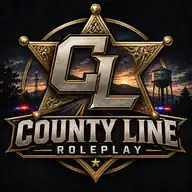

ENTRY LEVEL
APPLY THROUGH DISCORD ↗Patrol Deputy
Respond to calls, patrol county roads, and serve the community as a member of the Sheriff's Office.

COUNTY LINEROLEPLAY PLAYER PORTAL ↗Explore current opportunities across the county. Choose a department, find a role, and take the next step.
Protect the county, uphold the law, and build trust through professional, immersive roleplay.
Respond to calls, patrol county roads, and serve the community as a member of the Sheriff's Office.
Enforce traffic and state laws while keeping highways and surrounding communities safe.
Help guide new officers, reinforce department standards, and support quality patrol operations.
Answer the call, provide emergency care, and make a difference when the community needs you most.
Respond to medical calls, fires, and emergencies while supporting the department in the field.
Deliver advanced pre-hospital care and coordinate patient treatment during emergency incidents.
Support crews, coordinate scene response, and help maintain department readiness.
Build your own story outside public safety. Create a business, work a trade, or become part of the county's local economy.
Bring a business to life, create jobs, and help shape the county's local economy.
Keep the county moving by repairing, servicing, and customizing vehicles.
Develop your character, find your place in the community, and create memorable stories.
Join the community Discord to learn about the application process and get started.
JOIN OUR DISCORD ↗